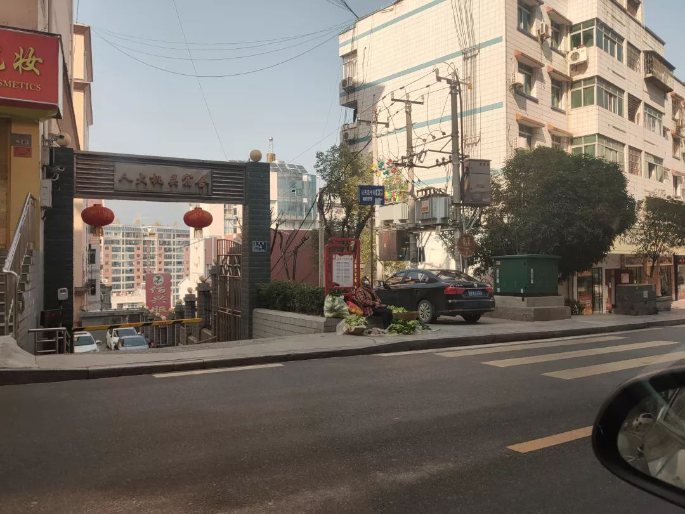
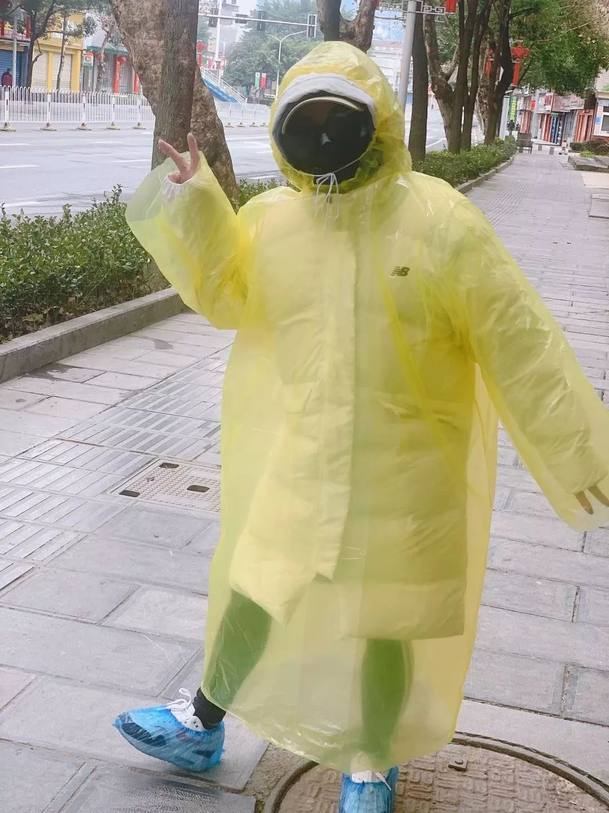

你也是，本该回到武汉的这「500万分之一」吗？
原文链接 备份链接 开启更有意思的武汉！请点击上方优良better →点击右上角“…” → “设为星标 ” 1月26日，湖北省人民政府新闻发布会上，武汉市长周先旺戴着口罩，疲惫地说出：“因春节因素和疫情因素，大约有500多万 …


- 疫 情 之 下 -
只有在这样的特殊时刻，我们才体会到平平常常的日子是多么美好，多么幸福……
”
疫情爆发得如此迅猛，让所有人始料未及。
己亥年腊月二十九，公历2020年1月23日，我去单位上年前最后一天班，那时我尚未有所警觉，在路上看见零零星星的人戴着口罩，也并未在意。
同一天，武汉关闭所有离汉通道。这一“封城”举措犹如一枚重磅炸弹，掀起了一轮滔天巨浪。网络沸腾了，铺天盖地尽是相关消息，字里行间散布着恐慌和焦虑。
我们所在的县位于湖北省最西边的大山深处，隶属恩施自治州，与重庆巫山县相邻，巫山已经传出确诊病例。但现实中依然平静，人们正常上下班、散步、买菜。街边店铺已经关闭了许多，这在往年看来极为正常的现象，此刻却仿佛带来一丝不祥的讯息，人们的言行都愈发小心翼翼起来。

空荡荡的街上，一位戴着口罩卖蔬菜的老奶奶。
有同事悄悄问我：你买口罩了吗？得知我还没有口罩，同事语气焦急地提醒我：赶紧去买呀，再晚就没有了。
下班前，同事给了我一个一次性口罩，这是一个多么平常、廉价的蓝色口罩，时势却突然赋予了它异乎寻常的价值。一天不到的时间，街上戴口罩的人明显多了起来。
我走进第一家药店，里面冷冷清清的。我又产生了一丝犹豫，我是不是有点人云亦云了？但没等我询问，药店的售货员就主动开口了：要买口罩的话，对不起，已经没有了。我找到第二家，门口贴着“口罩已售空”，第三家、第四家亦如此。
我惊讶而懊悔地发现，整个城里已经买不到口罩了，哪怕是最平常、最廉价的一次性口罩。
乘上公交回家，平时拥挤的车厢里今天只坐满了一半，人人都在谈论武汉的疫情，不知谁发出一声咳嗽，令人胆战心惊，即使隔着口罩，也不禁屏住了呼吸。回到家，才知我媳妇不知在哪买到了一些一次性口罩，虽不多，聊胜于无。
第二天就要过春节了，小城却笼罩在山雨欲来的氛围之中，开始有人在网上呼吁，春节期间大家不串门也不拜年。
这注定是一个一面是喧嚣和惊恐、一面是平静和焦灼的春节，也是我有生以来过得最特别的一个春节。
大年三十，中午和家人吃完团年饭，我和妻子就带着女儿开车去岳母家。路人行人寥寥，公路上空荡荡。想起前几日街上的情景，人群熙熙攘攘，汽车川流不息，真是恍如隔世。
岳母家在离县城十几公里的农村，门前的公路是连接县城与沪蓉高速的交通要道。来之前已和女儿约法三章，不允许上街，不允许去别人家找小朋友玩，出门戴口罩，进门先洗手。而且今年在外婆家只玩一天，不拜年不串门不聚餐，初二就回去。
女儿抱怨着今年的“红包雨日”岂不是没有了？我说比起收压岁钱，还是命更重要。女儿很听话，只在天黑的时候，去门廊边玩了一盒甩炮，放了几支烟花棒，就进屋了。
鼠年春晚开始了。我盯着手机，在微信和微博之间轮流切换，关注着疫情的最新消息，偶尔抬头看两眼，电视机里一片歌舞，海市蜃楼一样遥远。
临睡前刷手机，关于武汉的消息铺天盖地，看着心疼，却不知哪条是真，哪条是假。不过在大年夜，有那么医护人员和军人连夜奔赴武汉，也令我感到十分安慰。
庚子年正月初一，清早睁眼第一件事情看疫情实时动态，数据一夜又增长好几百。外面没有鞭炮声，没有人串门。安静得异常。
在朋友圈里陆续看到县城周边也开始封闭道路的图片，我大吃一惊，和妻子商量了一下，担心再晚一些回去，就回不去了，决定马上就走。
县城内空无一人的街道。
路上外地车辆特别多，很多鄂A的车牌，更多的是来自湖北其它县市及重庆、浙江、广东等地的车，都往高速入口方向驶去，可是据传高速路口已经关闭，不知道他们最终要驶向哪里。
我看见路边有一群群人悠闲漫步，有大人，更多的是孩子，兴许是去亲戚家拜年吧，他们有说有笑，没有戴口罩。
集镇上，四处停着汽车，妇女抱着婴儿站在路边和街坊闲聊，很多商铺正常开着，几个老人坐在门口，神态安祥。他们没有戴口罩。
一座乡村中学门口，挂着某某届校友春节返乡欢庆聚会的横幅，不知这场聚会是否成功？还是被成功阻止了？
有的人家大门敞开，堂屋里坐着满桌的客人，气氛十分热闹。当然也无人戴口罩。
直到接近县城了，戴口罩的人才多起来。
我们在车里谈起这个问题，难道他们没看新闻？都还不戴口罩？
也许在农村买不到口罩？
如果买不到，就尽量不要出门啊！
疫情的严重性在乡村还没有引起人们警觉，可是农村又不是世外桃源，病毒不会绕着走，何况那么多外出人员返乡过年，真的是不敢细想。
没过多久，妻子的同事发消息说，从县城到农村的大部分道路已被封闭，他们比我们晚出发一会儿，未能通行，只好继续留在老家过年了。城里一片冷清，看不见什么人影，人都躲在家里吧。
回到家里，老妈正做好饭。我们笑着说从现在起要省着点吃，封城了，还不知道啥时候解禁呢，要囤粮。妈说没事，咱家地里多得是白菜萝卜呢。
下午，看到武汉中心城区即将实行机动车禁行，心中也替武汉的民众着急起来……只有在这样的特殊时刻，我们才体会到平平常常的日子是多么美好，多么幸福……
初一到初三，全家都宅在家里，哪儿也没去。确诊人数与日俱增，就连本县也终于出现了第一例。人人都坐在家中，但流言就像长了脚，无处不去，无缝不钻，有人言之凿凿，附近某社区有一家数口疑似感染，被强行隔离，整个小区都封闭了。
我在微信上问住在那社区的一个朋友，她说被隔离的就是她妹妹，但检查结果出来只是普通感冒而已，并不存在一家都被隔离，传来传去就变成我们听到的样子。
“这个春节很特殊，自家屋里把火烤……相信政府有能力，不信迷信不信谣。”每天一早，窗外传来宣传车喇叭循环播送的抗击疫情顺口溜，将我准时唤醒。

我老婆的同事，她去医院换药，被妈妈如此打扮。
这些天虽然我们可以安全地待在家里，但是许多人依然坚守在岗位上，警察、医护人员、基层干部从三十到现在，一天都没有休息过。单位通知我们上班时间推迟，主要负责人却早都已经下沉到乡村基层，参与到抗击疫情第一线。
从城区到乡村，抗击疫情的宣传工作终于不留死角地发动起来，村社区工作人员不分昼夜挨家挨户筛查从武汉返乡的人员，并进行登记。
幺婶在镇医院上班，每天清早，她都从我们家门前经过去上班，但我从来没看到她是什么时候下班经过门前的。
战友的女朋友在人民医院当护士，连续值班三天三夜，昨天夜里十点，战友发了一条朋友圈：她哭了一会就睡了……零点到四点，她又是一条好汉。
在派出所上班的前同事告诉我，他们现在出警，也只有最简陋的一次性口罩作为防护，有时遇上夫妻吵架之类的警情，去处警爬楼梯爬得气喘吁吁，说话时隔着口罩忍不住咳嗽一声，报警人就面色紧张，主动说我们不吵了，不麻烦你们处理了，然后“嘭”地一声关上门。
他继续说，从25号到今天，全国已经有多名民辅警永远倒在抗疫一线了，其中最年轻的才26岁。
挂上电话，一时黯然，我只能默默在内心遥祝所有一线警务人员平安。
县城现在急缺医用防护物资，巡特警派人驱车几百公里，去邻近的城市筹集物资，每天来回几趟，解决医护人员和市民的燃眉之急。
然而随着确诊和疑似病假的增加，无论是县医院还是乡镇医院，医护物资都出现严重短缺。非常时期，所有援助物资都优先供应省会武汉和周边大城市，像我们这样的小县城几乎是得不到外界关注的。
开宠物医院的表弟将店内囤积的一万余只医用口罩赠送给附近民众；一名51岁的残疾人自己采购了六千多斤蔬菜、腊肉，送到定点医院的食堂，茶水都未喝一口，卸完蔬菜就走；有人联系面料供应商和服装厂，自己动手制作防护服供应医护人员；一位老中医主动熬制中药抗流感预防药剂，免费发放给周边社区居民；许多居民自发组织起来，用喷洒器给社区周边的道路和公共设施进行消毒。

参与社区疫情防控的社区志愿者。
更多的志愿者在行动。
三名90后志愿者发起了线上募捐活动，他们在短时间内募集到两万多元，可是光有捐款不起作用，现在需要的是物资，志愿者们终于联系到一家还有少量库存的口罩工厂，连夜开车前往工厂所在的城市，采购到两万多只口罩，又连夜赶回，将这批物资无偿分发给当下最需要的人。
还有无数个我不知姓名的普通人在默默出力，他们并不在乎是否被人知道。这儿是我们的家园，“干净自强”的口号并不只是喊喊而已。
这是一场看不见硝烟的战争，主战场在武汉及全国各省市，小县城和乡村的疫情防控在这场举国战役中也许并不起眼，却同等重要。千里之堤，毁于蚁穴，看不见的新冠状病毒，它们在寻找每一处间隙和漏洞。
初五以后，天气持续晴好。一些警惕性不高的人开始耐不住无聊，以为疫情已经过去，探出脑袋，四处窜动、聚集。风和日丽的日子，谁不想郊外踏青享受阳光、微风呢？然而现在正是防控关键时期，疫情蔓延仍不容小觑，每次全国疫情动态的数据更新都让人触目惊心。社区紧急召集志愿者参与疫情防控宣传，我报了名。

这是我爸爸，他率先自发为社区道路和设施进行消毒。
第一次背上喷洒器，将消毒液喷洒在街道两侧；第一次向街上闲逛却未戴口罩的人发放口罩，并叮嘱他们一定要戴上口罩，没事就不要出门；第一次应人之邀，去陌生人家中帮他们做户内消毒。我的动作和语言都还很笨拙，做的事情也根本微不足道，但此时有千千万万的人正在做着同样微不足道的事情，为了一个共同的目标。
98年洪灾，03年SARS，08年强震，我们的祖国历经了多少劫难，一次次灾后重建，一次次浴火重生，国家的命运与亿万普通人的命运紧紧连在一起，因为众志成城，所以终将胜利。
在这次肆虐全国的新冠病毒疫情中，随着信息技术的延展，关于疫情的负面消息层出不穷，使人目不睱接，批评、指责和阴阳怪气的语调充斥于网络，焦躁、怀疑甚至愤懑的情绪隔着手机屏幕都能感受到。
而我们这样的普通人能做什么？我们当然只能做普通人该做的事啊，爱护我们的家人和四邻，也不要把冷漠的面孔朝向陌生人，锻造自己辨别是非的能力，用善意和感恩回馈养育我们的家园，敬畏大自然及一切生命。
不要紧紧盯着阴影，抬头，就会看见阳光。
-EN
图文 | 隐翅虫，青年作者。
“我故”故事练习生培养计划，详情请戳：

About us
主编：鹿｜本期编辑：鹿
Contact us
投稿/商务合作/咨询
微信后台留言 or 邮箱：wmsygsdr@163.com
**我们是有故事的人｜华中科技大学出版社官方故事平台**
原文链接 备份链接 开启更有意思的武汉！请点击上方优良better →点击右上角“…” → “设为星标 ” 1月26日，湖北省人民政府新闻发布会上，武汉市长周先旺戴着口罩，疲惫地说出：“因春节因素和疫情因素，大约有500多万 …
原文链接 备份链接 今年的年味被消毒水的气味尽数冲淡，人们不再热热闹闹地走亲访友，而是躲在口罩和猫眼后紧张地提防着每一个擦肩而过的人，彼此都将对方当成移动的病毒源。 旅行取消，机酒退订，期待已久的海外演唱会一排门票低价转手，「在家隔离」 …
原文链接 备份链接 【编者按】 28日，我们收到了一位名为“尘香”的读者来信，她是武汉人，退休在家，和丈夫、女儿、女婿一起留守在武汉市江汉区：截至2020年1月29日24时，武汉市累计报告新型冠状病毒感染的肺炎病例已达2261例，死 …
原文链接 备份链接 逃离大武汉|中经武汉封城日记 2020-01-24 09:00 作者：老詹 来源：中国经营网 文/老詹 今天是1月23日，农历腊月廿九。凌晨6﹕10，我在睡梦中突然被急促的电话铃声吵醒，在汉口打工的侄子大声说：“叔，快 …
原文链接 备份链接 本文由娱志The Review原创出品 华东师范大学传播学院学生娱评号 转载需申请授权 作者 | Moe，苏博 编辑 | 华实 导语 “自2020年1月23日10时起，全市城市公交、地铁、轮渡、长途客运暂停运营；无特殊 …